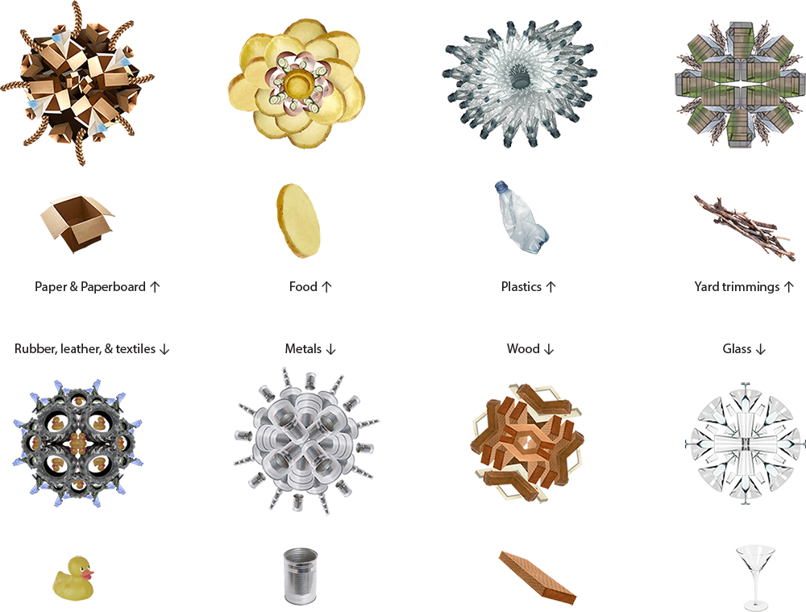

Since 2021, Yvette has been assigning her students in the Information Design class at OSU to spend one week collecting quantitative and qualitative data on their daily discarded waste and waste disposal methods. The objective is to raise awareness about being mindful of how we use, discard, or waste mundane things in our lives. In Fall 2022, Joe assigned his students at North Dakota State the same task, allowing a comparison between the results from two groups of students in two different states. The data-tracking outcomes from both classes were remarkably similar. The most frequently discarded items in students' lives were food and packaging materials, with their primary focus on data collection being the materials they discarded. Despite the small sample size of student data, it prompts us to wonder whether it aligns with the waste patterns of the larger population and identifies the most wasted materials in the united states.
The answer is a resounding yes, supported by the data on the EPA website. Therefore, we decided to present this information to the public in a more visually appealing and engaging manner.
"Bloom" comprises three layers of data: 1. Proportions of materials in solid waste recorded by EPA; 2. Decomposition time for each material type; 3. The most common items in each material category. Our project goal prioritizes effective communication and engagement, avoiding unnecessary complexity. We believe a successful data "point of view" is not defined by its intricacy but by its clarity and viewer engagement. If complexity impedes understanding or connection for lay audiences, then the essence of the point of view is lost.
Rather than targeting only a niche audience with specialized knowledge or aesthetic preferences, we see the importance of rendering complex societal issues accessible and meaningful to a wider public. Therefore, our design approach strives to resonate with all, enhancing the pursuit of understanding and engagement with these essential matters, making it not only more inclusive but also more impactful.
The flower motif in this project symbolizes the life cycle of waste materials, paralleling their use, decomposition, and environmental impact. These universally recognized symbols, with their stages of growth, blossoming, wilting, and decomposing, serve as a metaphor for the often-ignored lasting effect of waste. This contrast between the beauty of nature and the reality of consumption underscores the discrepancy within our wasteful culture and consumerist society.
The intentional use of flower forms has a dual purpose: representing waste categories and offering a subtle critique of wasteful practices. Composed of representations of the most discarded items in each category, these floral arrangements, with their somber hues and surreal design, evoke a melancholic reality. This paradoxical approach, including the flower motifs as an engagement strategy, bridges the gap between the perception of consumed goods and their environmental impact. It encourages a more thoughtful and effective waste management approach, resonating beyond mere aesthetics to foster understanding and change among the general public.